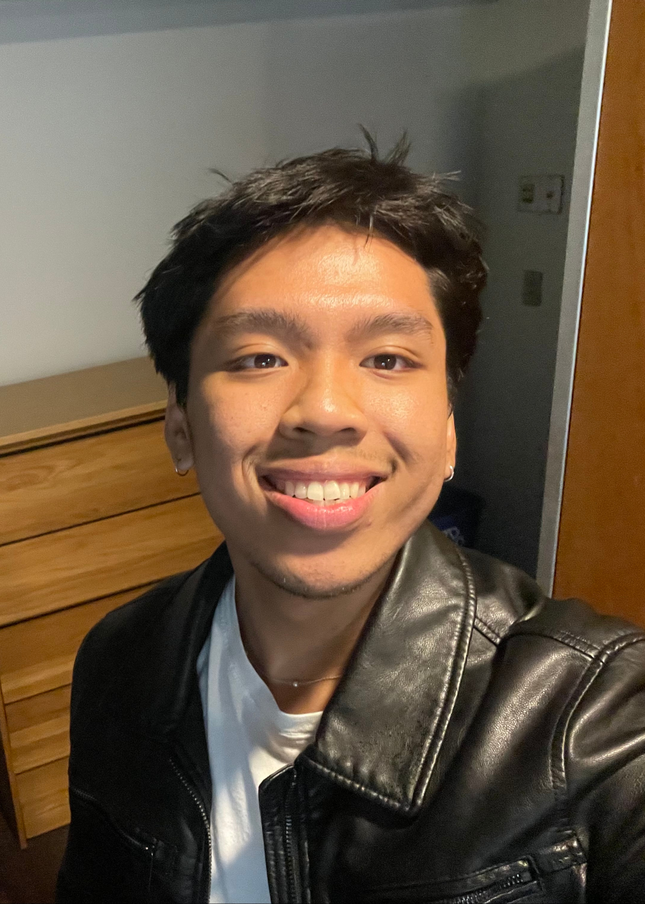
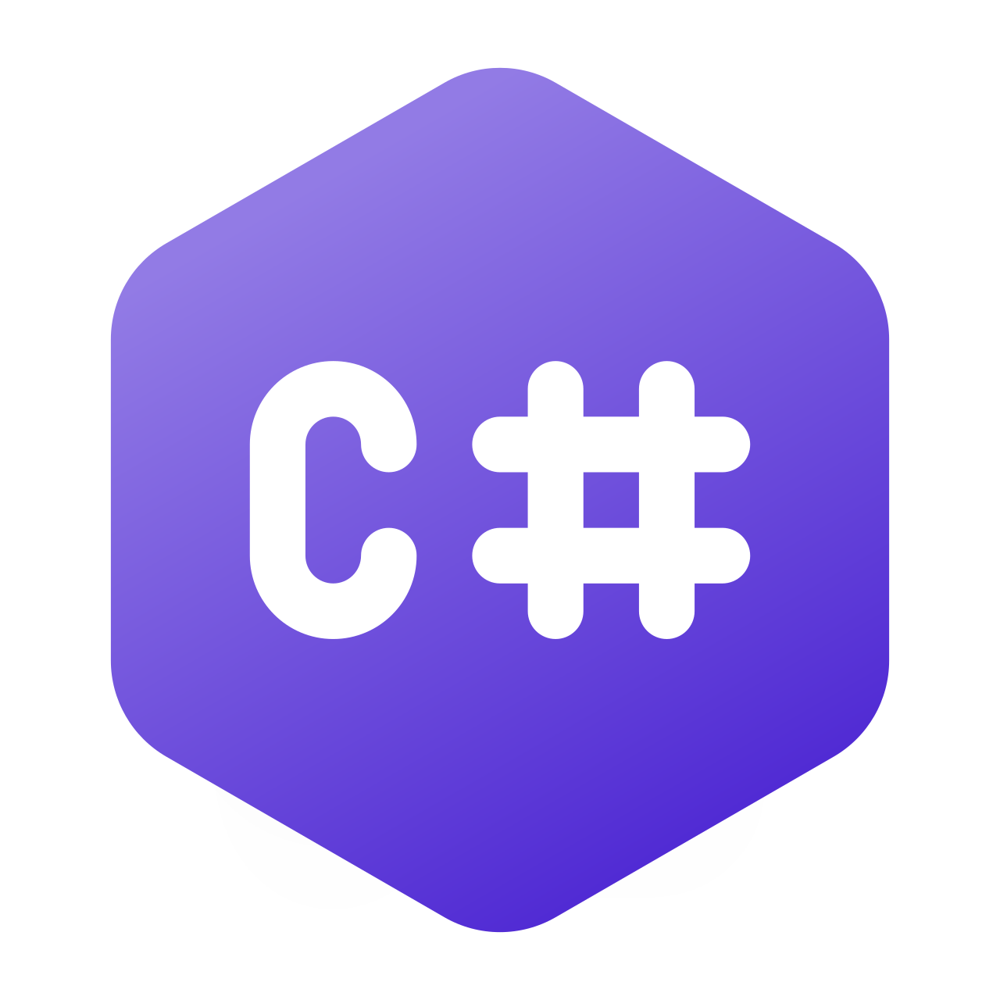
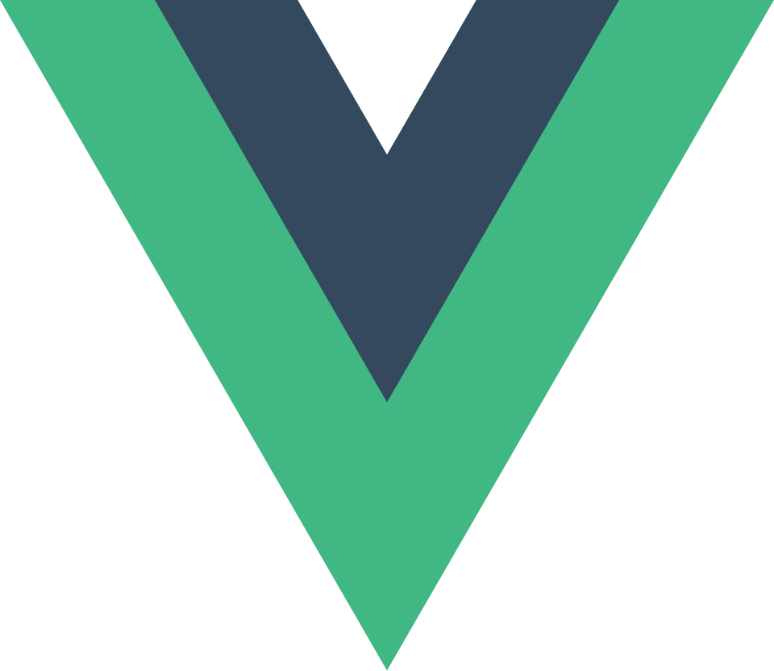

Vexillologists.com
A place to learn flags, explore the world, and play fun, easygoing daily challenges ⛳️

Jr. Software Engineer at
Najaxa
Software ↗
B.A. in Computer Science & History
St. Olaf College

C#
VueIn July, I started working as a Junior Software Engineer for Najaxa Software. There, I've been supporting the development of the team's flagship staffing solution named Najaxa Middle Office. From frontend design, to API development, to E2E testing, to unit testing, and much more, Najaxa has allowed me to develop into a much more rounded engineer. I've been able to both apply myself and learn so much about software engineering. The team has been extraordinary; I'm quite grateful for everyone I've been working with. I'm excited to see what lies ahead!
During my last year of college, I worked as an App Developer for Project Friendship, a local non-profit organization. There, I sharpened my backend and cloud infrastructure skills. I also completed course on Quantum Computing while serving as a Teaching Assistant for a senior-level algorithms course. After that, I was a Machine Learning and "All Around" Teaching Assistant for the department. I also spent the year as a research follow for the Center for Interdisciplinary Research. I also got inducted into the national honors society for history, Phi Alpha Theta. Finally, I graduated Magna Cum Laude from St. Olaf College with a Bachelor of Arts in Computer Science and History, along with a concentration in Statistics and Data Science.
In the spring, I completed courses on data science, statistical learning, and machine learning. My team also won the People's Choice Award at St. Olaf College's Ole Cup 2025! I helped design, develop, and market an app called BloomMates, you can find more information about it here. I also served as a teaching assistant for the computer science department. In the summer, I worked at GCS Geospatial as a Software Engineer intern and continued working on personal projects.
I worked under a professor teaching an introductory statistics course, and continued completing personal projects and certifications. I completed courses on ethics in software design, statistics, hardware design, and analyzing algorithms.
Outside of class, I worked towards completing various projects and certifications, mostly pertaining to frontend and backend web development. I also completed courses on data structures in C++ and software design.
After much deliberation, I decided to take myself to Northfield, Minnesota and pursue a Bachelor of Arts in Computer Science and History at the small private liberal arts institution of St. Olaf College.
A place to learn flags, explore the world, and play fun, easygoing daily challenges ⛳️
People's Choice Award at Ole Cup 2025; A mental health and social connections app centered around giving flowers 🌸
An Arabic learning app built around practical conversations, courses, and a 15-minute daily study plan 🗣️
An AI-assisted food diary that turns natural-language or voice meal descriptions into macro tracking with exportable data 🍽️